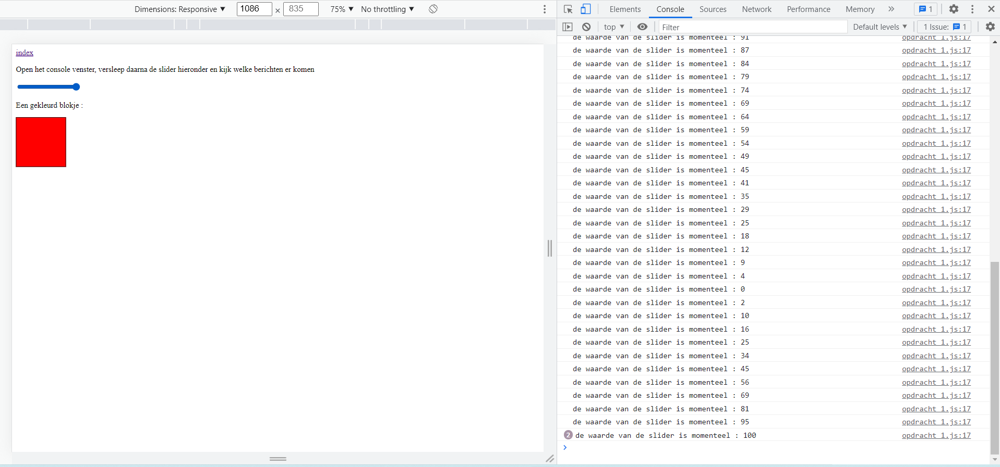

Open het console venster, versleep daarna de slider hieronder en kijk welke berichten er komen
Een gekleurd blokje :
Open het console venster in de Chrome Developer Tools en kijk wat er gebeurt als je de slider verschuift.
in de console zegt het altijd welke waarde wordt.
Vergewis je ervan dat als je stopt met slepen, er op de console 2 meldingen komen voor de laatste waarde.
de laatste waarde staat erop.